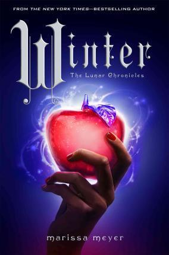

The Lunar Chronicles is written by Marissa Meyer.
For more information on The Lunar Chronicles, click here.
Cinder by Marissa Meyer.
Courtesy of wikipedia.com
Publication date: January 3, 2012
Book 1 of The Lunar Chronicles.
New Beijing's streets are crowded with both humans and androids alike. The population is held victim to a deadly plague called letumosis, for which there is no known cure. The cruel, merciless Lunar people watch from outer space, waiting for the right opportunity to take action. Unknowingly, the fate of planet Earth lies in the hands of one girl.
When Cinder, a cyborg, becomes entwined with the royal palace, her life is not the only one jeopardized by the threat of an intergalactic conflict. Forced into making the difficult choice between responsibility and liberty, allegiance and disloyalty, she must uncover the secrets of her past to save the future of her world.
|
Scarlet by Marissa Meyer.
ScarletPublication date: February 5. 2013 Book 2 of The Lunar Chronicles. |
Cress by Marissa Meyer.
CressPublication date: February 4, 2014 Book 3 of The Lunar Chronicles. |

Winter by Marissa Meyer.
WinterPublication date: November 10, 2015 Book 4 and the final installment of The Lunar Chronicles. |
Linh Cinder
Courtesy of http://lunarchronicles.wikia.com/wiki
Linh Cinder is the main protagonist and narrates all four books in The Lunar Chronicles. She works as a professional mechanic. She is strong-willed and can be stubborn, but very determined and capable. She values the lives of others and is sympathetic, though her insecurities of being a cyborg with metal parts make her slightly awkward at times. Cinder is both tough and compassionate, with the characteristics of a good leader.
Iko
Courtesy of http://lunarchronicles.wikia.com/wiki
Linh Cinder's close friend, Iko is an android with a faulty personality chip that allows her emotions to nearly perfectly portray those of a human's. She is effervescent, bubbly and sweet. Her talkative and outgoing nature are qualities that make her distinguishable from other androids. In addition, she has an interest in fashion and beauty, as well as in lavish events such as the annual ball that takes place at the New Beijing Palace.
Kaito
Courtesy of http://lunarchronicles.wikia.com/wiki
Prince of the Eastern Commonwealth and later crowned Emperor, Kaito is kind-hearted with positive intentions for the welfare of his country. Constantly under pressure and left feeling stressed, he can still lighten the atmosphere in any situation with his humour and confidence. He is quite inquisitive, relentlessly persistent in asking questions and though he can get angry fairly quickly, he manages to control it.